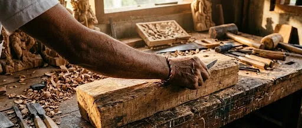
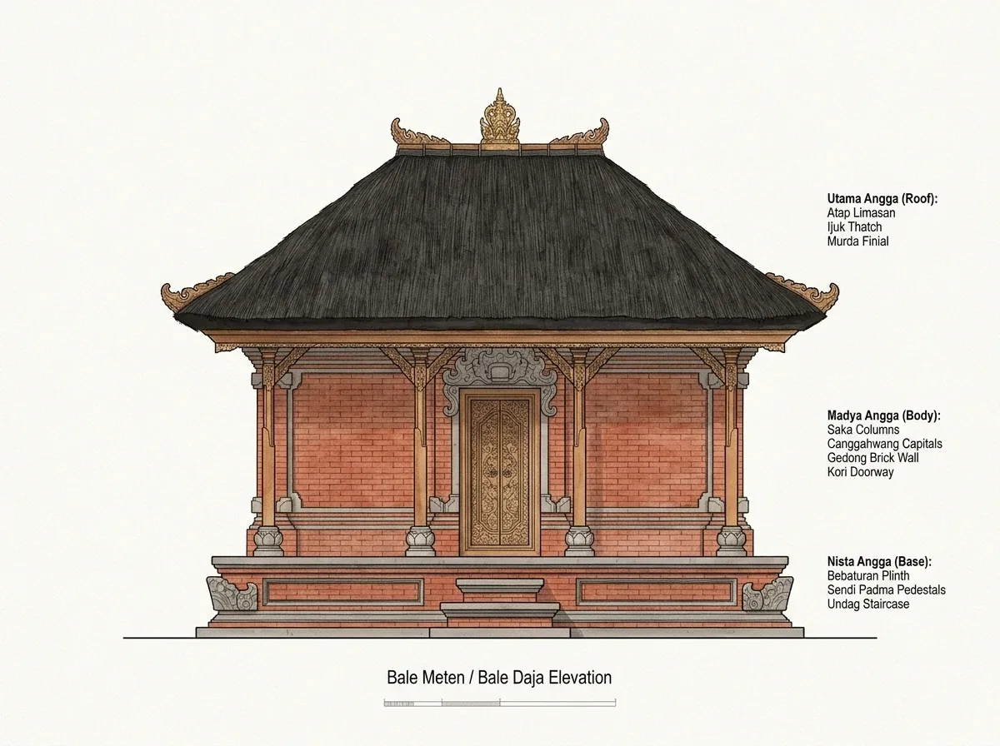

Ukuran yang berangkat dari tubuh manusia.
Dalam arsitektur tradisional Bali (Asta Kosala Kosali), ukuran tidak dibakukan dalam sentimeter pabrikan, melainkan diambil langsung dari proporsi fisik pemilik rumah agar tercipta hubungan harmonis antara manusia dan ruang yang dihuninya.

Dalam kajian arsitektur Bali Madya, satu hasta diukur dari lipatan siku hingga ujung jari tangan tengah yang direntangkan lurus. [B-07]
Contoh awal 45 cm merupakan angka ilustratif. Simulasi berjalan langsung di perambanmu tanpa pengiriman data ke server.
3 × 45 cm
Lengkapi ukuran yang valid untuk melihat hasil.
135 cm

Perhitungan ini adalah simulasi edukasi perkalian ukuran pribadi, bukan ketetapan konstruksi fisik maupun penghitungan pengurip ritual.
Sistem sikut antropometrik.
Kajian Asta Kosala Kosali dan Asta Bumi mengatur agar bentang ruang, jarak antar-bale, hingga tinggi lantai diukur berdasar anatomi penghuni rumah. [B-05] [B-07]
Hasta (Siku ke Ujung Jari Tengah)
Satuan ukuran dari lipatan siku hingga ujung jari tengah tangan yang direntangkan lurus. Ukuran ini berbeda pada setiap orang.
Depa (Rentang Kedua Tangan)
Rentang dari ujung jari tangan kiri hingga ujung jari tangan kanan. Depa memiliki beberapa variasi pengukuran.
Musti (Kepalan Ibu Jari Tegak)
Ukuran kepalan tangan dengan posisi ibu jari didirikan tegak. Dalam contoh pengukuran tradisional, musti dapat digunakan sebagai tambahan ukuran (pengurip).
Tapak & Nyari
Panjang telapak kaki (tapak) dan tebal jari tangan (nyari) sebagai satuan pelengkap dalam penyusunan undag tangga dan ornamen ukiran padas.